一人ひとりのリズム
年齢や気持ちに合わせて、その子らしい生活のリズムを大切にしています。
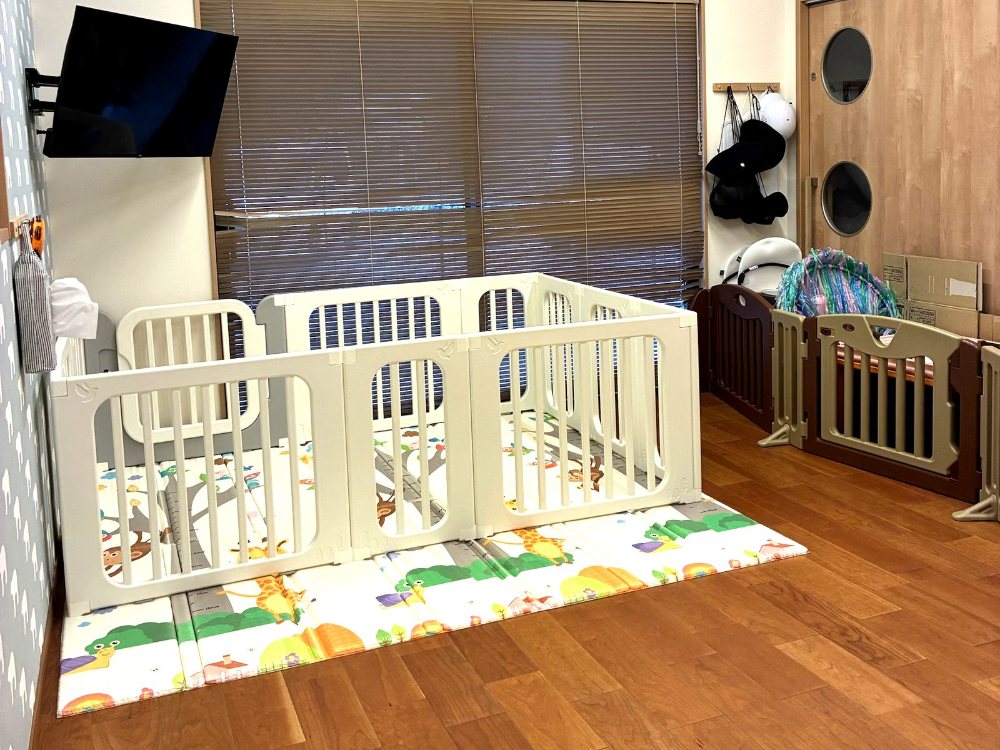
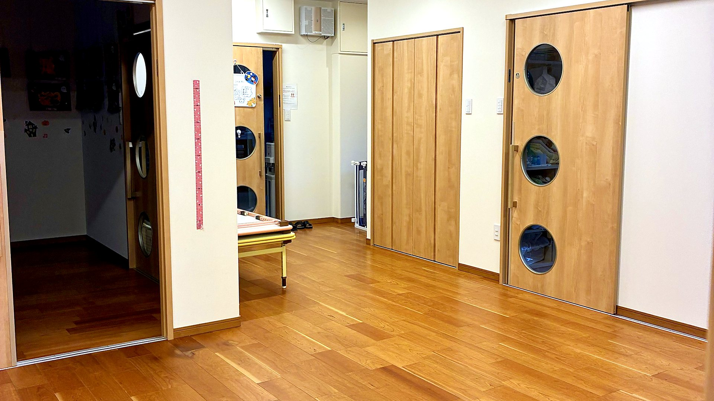
園での生活
かみのて保育園で過ごす、一日と一年をご紹介します。
年齢や気持ちに合わせて、その子らしい生活のリズムを大切にしています。

給食もおやつも自園調理です。食べる楽しさを、毎日の暮らしの中で育みます。

朝の受け入れから日中まで、体調の変化に気を配りながら見守ります。

年齢や、その日の様子に合わせて過ごします。
食べる・眠るの時間は、一人ひとりちがってかまいません。おうちでのようすをうかがって合わせていきます。
友だちといっしょに過ごす時間が増えます。年長は就学に向けて、少しずつ生活のリズムを整えていきます。

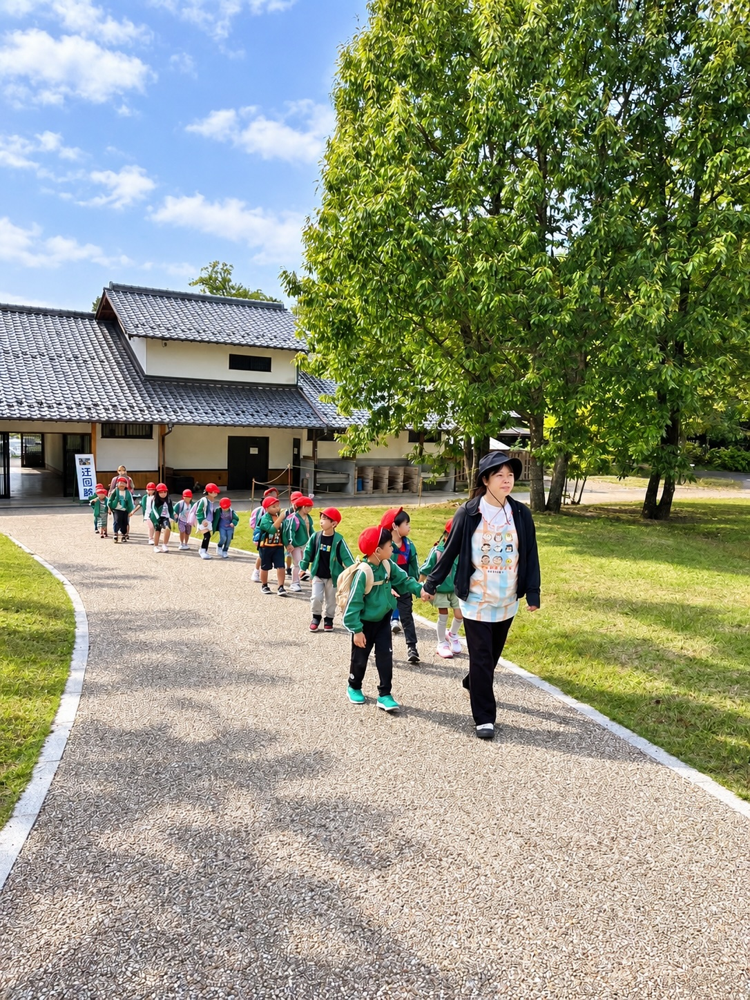
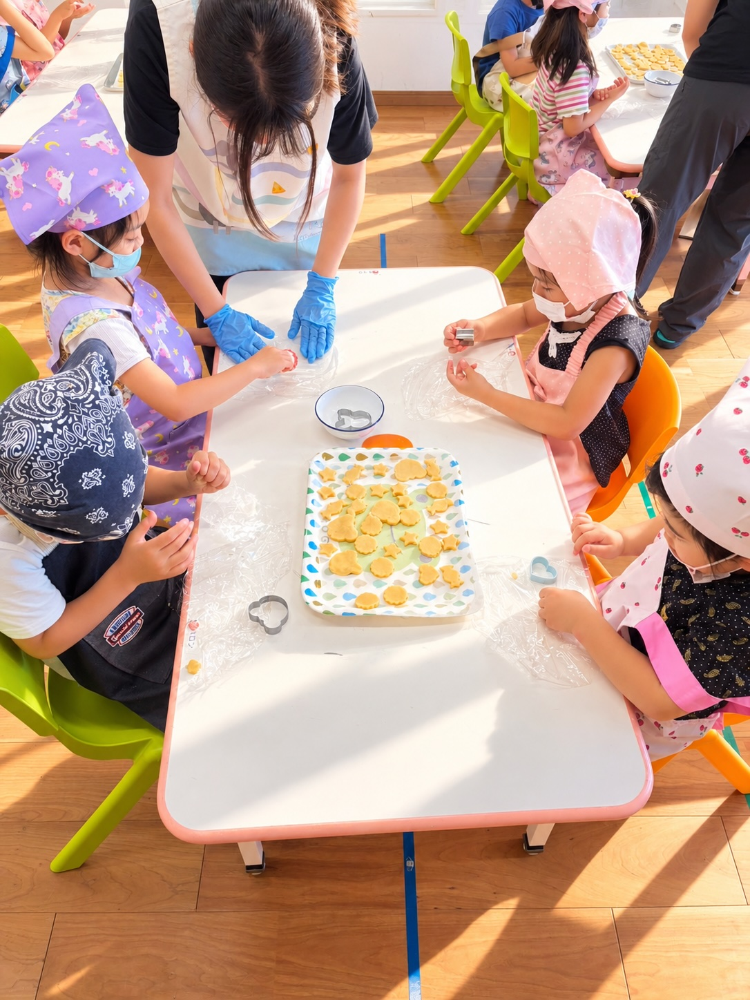
※ 時間はおおよその目安です。その日の天気やこどもたちのようすで前後します。
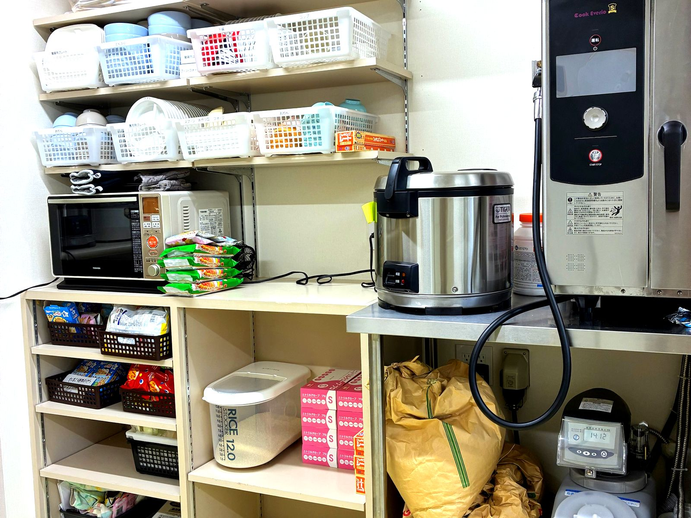


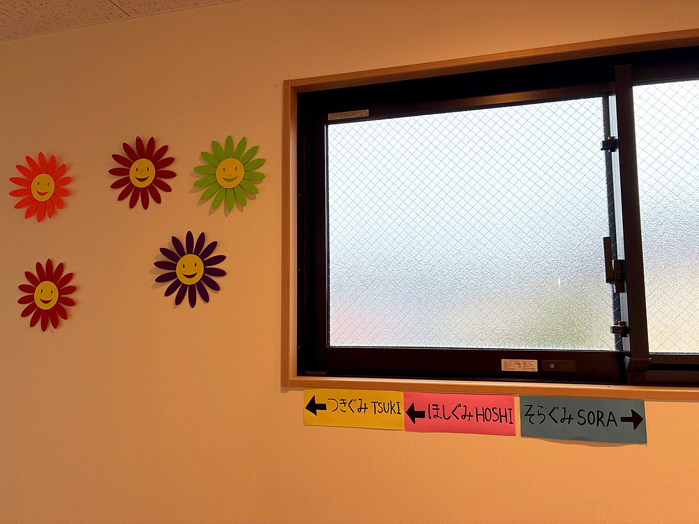


写真はイメージです
日本語と、おうちのことば。どちらも大切にします。英語・タガログ語・ビサヤ語・ポルトガル語で対応できる職員が、その子の分かることばで声をかけます。
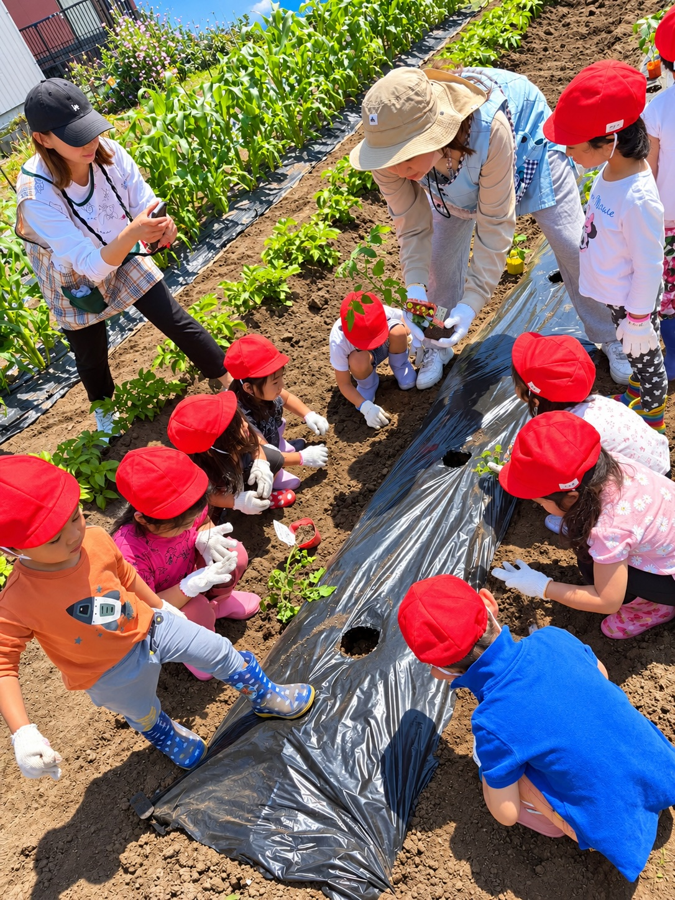
天気のよい日は毎日そとへ。園庭であそぶ日と、近くの公園までお散歩に出る日があります。
給食もおやつも自園調理です。アレルギーはもちろん、ご家庭の食文化にも合わせられます。

絵の具、のり、はさみ、粘土。上手に作ることより、やってみたい気持ちが続くことを大事にしています。
毎日の読み聞かせ。日本語の絵本のほかに、おうちのことばの絵本も置いています。

着替え、手あらい、はみがき、片づけ。先まわりして手を出さず、できるまで待ちます。
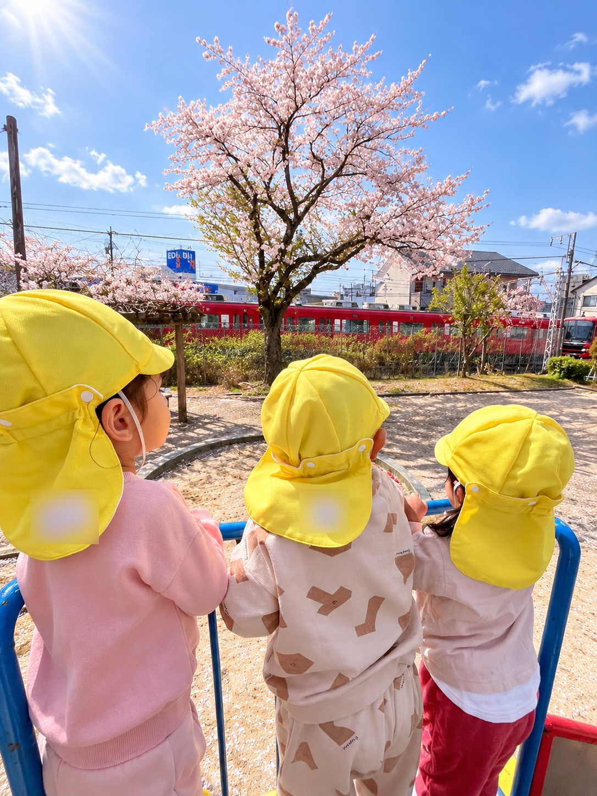
草花にふれながら、春の訪れを感じます。
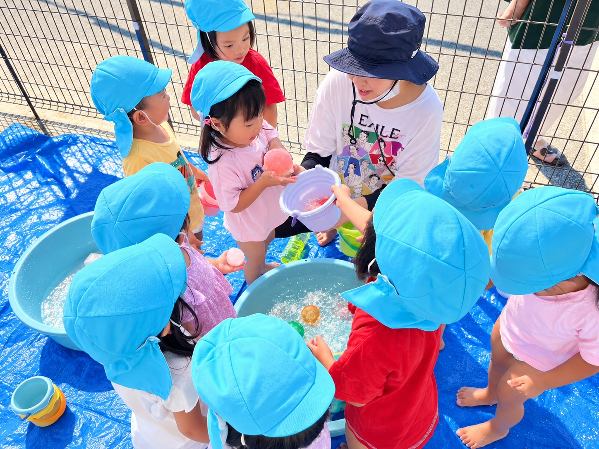
水あそびや夏の行事で、季節を楽しみます。
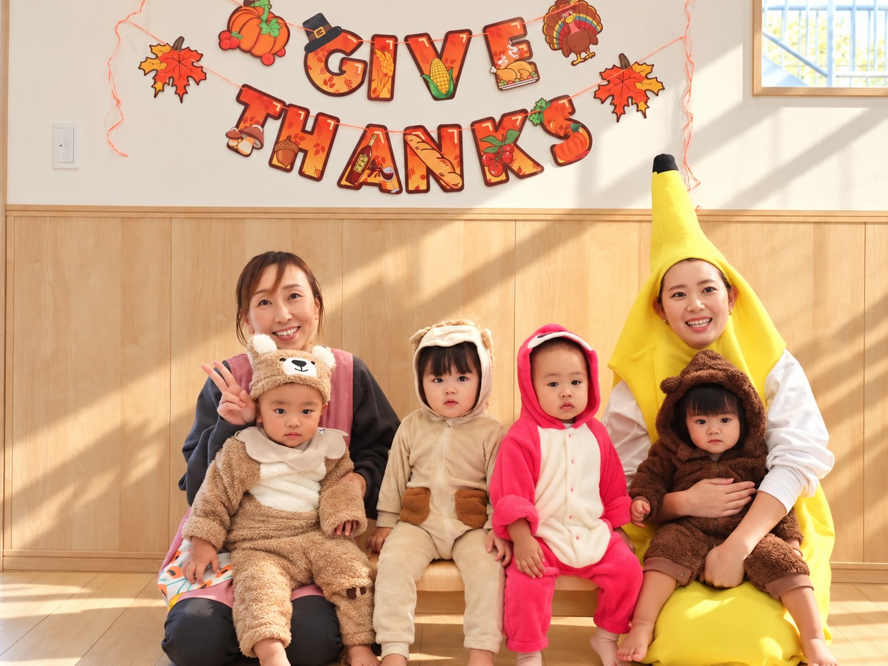
外あそびや制作を通して、季節の変化にふれます。
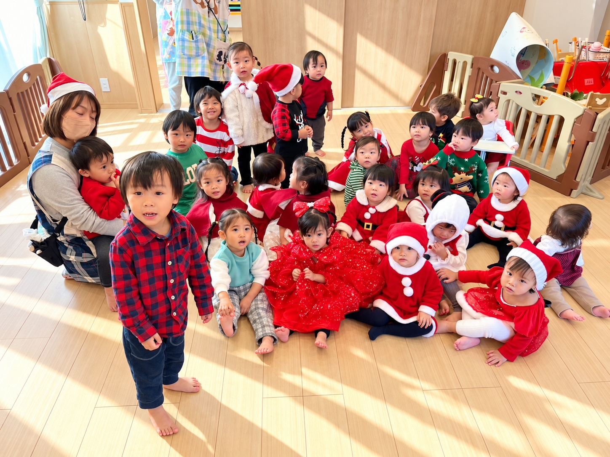
室内のあそびや行事で、ゆったりと過ごします。
※ 行事の内容や日程は年度により異なります。
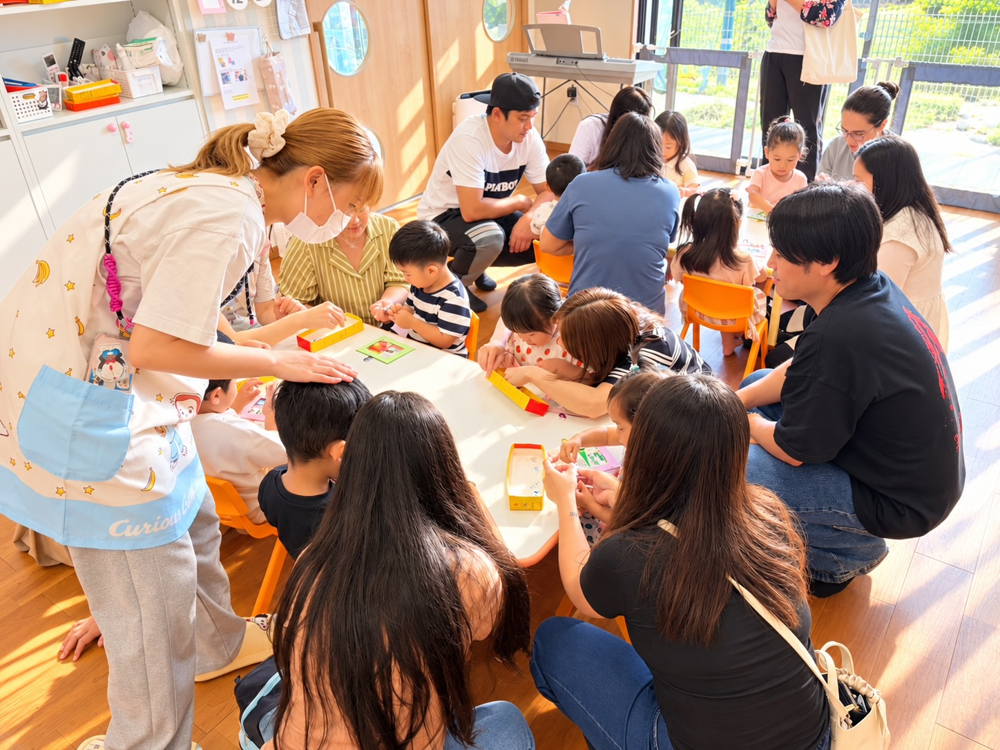
日々の出来事や成長の様子をお伝えし、ご家庭と園で、お子さまの育ちを見守ります。
その日のごようすを、おむかえのときにおつたえします。
日々の連絡は、基本は連絡アプリでお届けします。急ぎのときはお電話でご連絡します。
やさしい日本語のほか、英語・タガログ語・ビサヤ語・ポルトガル語でご案内できます。
気になることも、見学の際にお聞かせください。
見学・ご相談はこちら※ このページの一日の流れと行事は、一般的な保育園の例をもとにした仮のものです。取材のときにうかがって、かみのて保育園の実際の内容に差し替えます。